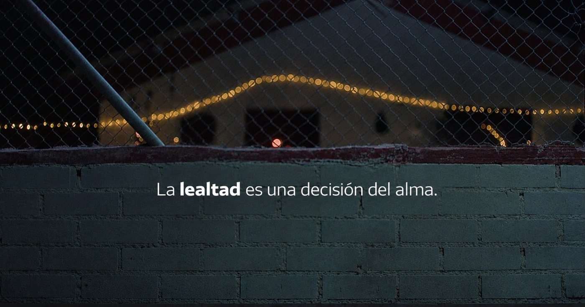
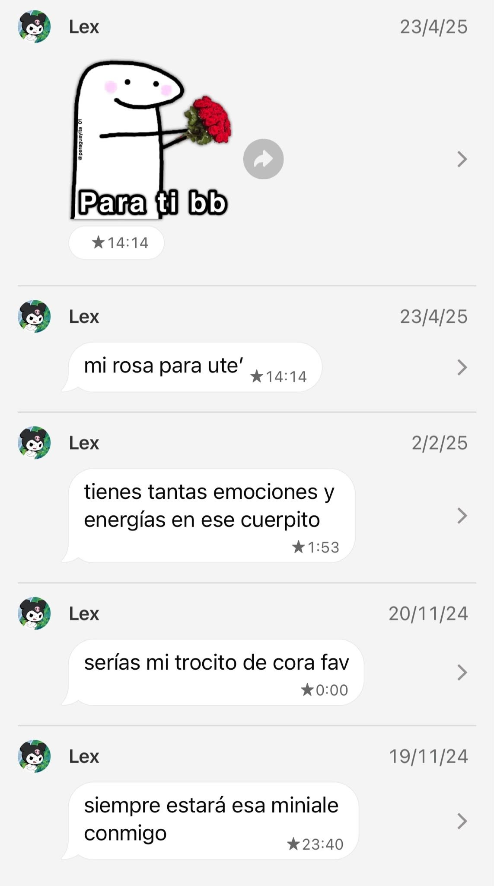
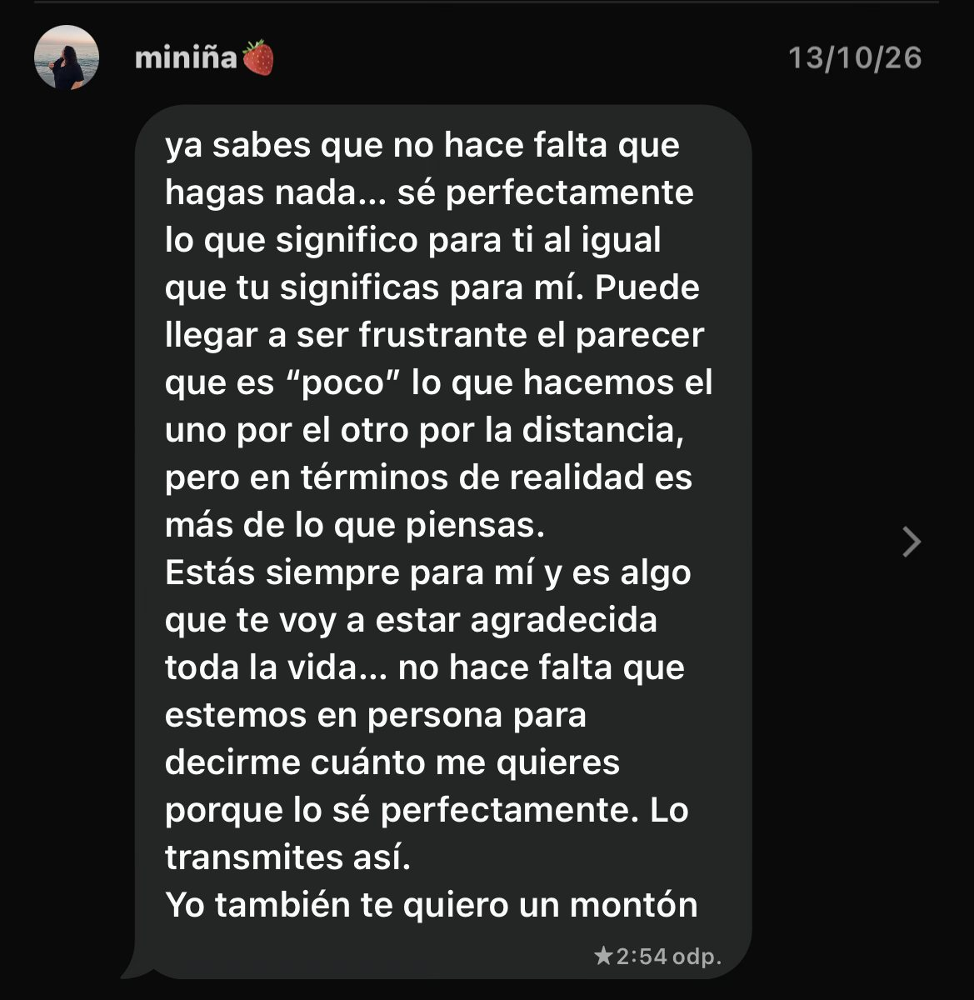

2020
El principio de todo. Una amiga tuya, Instagram, Discord y los primeros pasos de algo que ninguno de los dos sabía lo importante que iba a ser.
Un pequeño regalo de Navidad de tu bestie a más de 800 kilómetros.
Ya son seis años de amistad. He marcado cada uno con una luz, porque me hace ilusión ver todo lo que hemos compartido.
El principio de todo. Una amiga tuya, Instagram, Discord y los primeros pasos de algo que ninguno de los dos sabía lo importante que iba a ser.
Seguimos construyendo, mensaje a mensaje y partida a partida.
Otro año formando parte de la vida del otro.
Nuestra historia continúa.
Nuevos momentos, y cada vez más cerca aunque los kilómetros sigan ahí.
Seguimos compartiendo nuestra vida a pesar de los kilómetros.
Seis años de amistad y una Navidad que quiero convertir en un recuerdo especial.
Las puedes abrir en el orden que quieras. Algunas son pequeñas, pero todas las he preparado pensando en ti.
Has descubierto 0 de 12 sorpresas.
He reunido algunas de las cosas que forman parte de nosotros.
Elige una estrella y te cuento por qué la he puesto aquí.
He montado este pequeño museo con cosas que forman parte de nuestra historia. Pulsa cada objeto y te cuento por qué lo he puesto aquí.
He dejado unas cuantas luces por aquí. Toca los adornos y te cuento qué me recuerdan.
Pulsa un adorno, miniña.
He dejado unas cuantas por aquí. Elige la que te venga bien ahora, o abre una porque sí. Puedes guardar tus favoritas en este dispositivo.
Elige una carta y te la dejo abierta por aquí.
No hace falta que tengas un motivo para abrir una. A veces viene bien que alguien te recuerde que está al otro lado.

Nunca nos hemos visto en persona y hemos construido algo precioso. Y aun así, mira cuántas luces caben en medio.
Puedes escribirme cuando quieras. No necesitas estar bien para hablar conmigo, y no molestas nunca.
Seis años de historia con alguien a quien todavía no he podido abrazar. Cuando llegue ese día no necesitaré decir mucho, porque ese abrazo ya tendrá detrás seis años.
Tú con Marina y Alba Reche, yo con YSY A y Duki… y por medio, una playlist que hemos ido compartiendo. Me gusta que también haya un sitio para eso aquí.
Si te apetece, puedes dejar aquí algo que te gustaría que hiciéramos algún día. Se queda guardado únicamente en este navegador; no me llega ni se envía a ningún sitio. Y si prefieres no escribir nada, también está perfecto.
No sé cuándo podremos tachar estas cosas de la lista, pero me hace ilusión pensar que algún día sí.
Después de tantos años hablando, poder darte uno en persona.
Berlín estaría genial, pero también me vale cualquier sitio que te haga ilusión.
Compartir una de estas fechas sin una pantalla de por medio.
Pasar el día juntos, hacer alguna tontería y crear recuerdos nuevos.
Todavía no sabemos cuándo será, pero ese día merece la pena esperarlo.
Me hace muchísima ilusión pensar que los dos hemos terminado guardando palabras del otro. Tú has conservado algunas cosas que te he dicho y yo tengo guardados mensajes tuyos, y uno de ellos significa muchísimo para mí. Puede que para otras personas sean conversaciones antiguas, pero para mí son pequeños recuerdos de lo que somos y de lo que hemos construido durante estos años.


ya sabes que no hace falta que hagas nada… sé perfectamente lo que significo para ti al igual que tu significas para mí. Puede llegar a ser frustrante el parecer que es “poco” lo que hacemos el uno por el otro por la distancia, pero en términos de realidad es más de lo que piensas.
Estás siempre para mí y es algo que te voy a estar agradecida toda la vida… no hace falta que estemos en persona para decirme cuánto me quieres porque lo sé perfectamente. Lo transmites así.
Yo también te quiero un montón
A veces le doy vueltas a la distancia y pienso que me gustaría hacer más. Este mensaje me recuerda que no todo se mide en kilómetros, ni en horas de llamada, ni en las veces que podamos vernos.
Hola, miniña:
Para tu cumpleaños te hice un quiz y, con las Navidades por delante, me apetecía hacerte algo distinto. Algo que no tuvieras que contestar, que pudieras recorrer a tu ritmo y volver a abrir dentro de unos meses o de unos años. A mí me sale demostrar el cariño con detalles, y esta vez quería uno que pudieras guardar.
Así que me he puesto a escribirte esta carta, y llevo un buen rato pensando por dónde empezar. Creo que lo más sincero es empezar por lo más sencillo: gracias. Estoy muy agradecido de que aparecieras en mi vida en 2020, cuando ninguno de los dos tenía ni idea de lo que acababa de empezar.
Porque empezó de la forma más normal del mundo. Primero una amiga tuya, luego nos seguimos en Instagram y, de repente, estábamos hablando. Éramos unos críos. Con el tiempo nos pasamos a Discord, empezamos a jugar juntos a Fortnite, a Rocket League y a lo que se nos ocurriera, y sin darnos cuenta dejamos de ser dos personas que juegan juntas para ser dos personas que se lo cuentan todo. No sabría decirte el día exacto en que pasó. Fue poco a poco.
Y cuando lo pienso me parece una locura. Una amistad que nace por internet entre dos personas que viven a más de 800 kilómetros y que seis años después sigue aquí, de la manita. No sigue por inercia, sigue porque los dos queremos que siga. Contigo puedo hablar de prácticamente cualquier cosa, y eso, que suena sencillo, no se encuentra todos los días.
En todo este tiempo ha habido de todo. Llamadas, partidas, risas, tonterías, consejos, momentos muy buenos y otros bastante más complicados. Hemos crecido cada uno en su casa, pero sabiendo que teníamos a alguien al otro lado. Me has hecho reír cuando lo necesitaba y me has escuchado cuando necesitaba soltarlo todo, y yo he intentado estar ahí para ti igual. Hablamos casi todos los días, y los días que no, retomamos la conversación donde la dejamos.
Para mí eres la hermana que nunca tuve. Lo que empezó siendo una amistad por internet es ya familia, mi hermana elegida, y no sé cómo explicarte lo importante que es para mí que sigas formando parte de mi vida. Me hace feliz tenerte en ella, así de simple.
Hay una cosa que me ha hecho muchísima ilusión: descubrir que tú también guardas mensajes míos. Uno de ellos, del 19 de noviembre de 2024, dice que siempre estará esa miniale conmigo. Los otros seguramente también los escribí en unos segundos, sin darles más vueltas, como se escriben estas cosas entre amigos. Y tú decidiste quedártelos. Unas palabras que se escriben en nada y que acaban siendo un recuerdo importante. Eso es lo que más me gusta de ellas.
Y yo hago lo mismo contigo. Tengo guardados bastantes mensajes tuyos. En uno, del 1 de septiembre, me dices que soy de lo mejor que tienes en tu vida. En otro, del 24 de junio, me llamas tu cable a tierra. Y hay uno del 13 de octubre de este año que guardé por una razón concreta. A veces le doy vueltas a la distancia. Pienso que me gustaría hacer más, estar más presente, compartir más cosas contigo o poder ayudarte de maneras que ahora mismo no puedo. Y entonces me acuerdo de lo que me escribiste ese día. Que sabes perfectamente lo que significas para mí, igual que yo para ti. Que puede ser frustrante que parezca poco lo que hacemos el uno por el otro por la distancia, pero que en realidad es más de lo que yo pienso. Que no hace falta que estemos en persona para decirte cuánto te quiero, porque lo sabes de sobra. Y luego añadiste «Lo transmites así». Son tres palabras y me las sé de memoria.
Por eso lo guardé. Cuando me pongo a pensar en eso, tus palabras me recuerdan que no todo se mide en kilómetros, ni en horas de llamada, ni en las veces que podamos vernos. Y aunque a veces me siga pareciendo poco, me quedo con lo que tú dices, porque si lo dices tú me lo creo.
Que los dos hayamos guardado palabras del otro me parece de lo más bonito que tenemos. Para cualquiera serán conversaciones antiguas sin más. Para mí son pequeños recuerdos de lo que somos y de todo lo que hemos construido en estos años.
Más de 800 kilómetros entre tu Cáceres y mi Cataluña. Nunca nos hemos visto en persona y, aun así, tengo claro que nos conocemos mejor que mucha gente que se ve todos los días. Hay quien no entiende una amistad como la nuestra y me da igual, porque nosotros sí la entendemos. No quiero que esto suene a drama, porque no lo es. Estoy orgulloso de lo que hemos conseguido, sobre todo porque a distancia todo cuesta más y aquí seguimos.
Quiero que tengas clarísimas unas cuantas cosas, y me apetecía dejarlas por escrito para que las tengas siempre a mano. Puedes escribirme cuando quieras. No necesitas estar bien para hablar conmigo ni tener un motivo. Puedes contarme lo bueno y lo malo, lo importante y lo que no lo es tanto. No tienes que preocuparte nunca por molestarme, porque no molestas. Y yo quiero seguir estando en tu vida y seguir compartiendo momentos contigo, los grandes y los pequeños.
Y ahora algo más ligero, que tampoco quiero ponerme intenso todo el rato. La música. Tú con Marina Reche y Alba Reche, yo con YSY A y el hardcore, y de vez en cuando lo urbano y lo que se cuele. Sobre el papel son dos mundos distintos y aun así nuestra fusión de Spotify tiene un montón de canciones en las que coincidimos. En las que no, tampoco me importa, porque contigo nunca ha hecho falta coincidir en todo para entendernos.
Hay algo que me parece curioso: tener seis años de historia con alguien a quien todavía no has podido abrazar. Hemos compartido muchísimo y nos falta lo más básico. Pero creo que por eso mismo va a ser tan especial. Cuando por fin llegue ese día, creo que no voy a necesitar decirte demasiado. Ese abrazo ya va a llevar detrás seis años de conversaciones, de llamadas y de risas. Llegará con seis años de retraso, sí, pero con todo incluido.
Y no me da pena lo que nos falta, peque. Me da ilusión. Hemos hablado de viajar juntos algún día y Berlín es uno de los sitios que hemos mencionado, pero la verdad es que me da igual el destino. Lo que quiero es vivir cosas contigo. Partidas sentados uno al lado del otro, tonterías en directo con tu acento extremeño y sin pantalla de por medio, canciones nuevas que descubrir y recuerdos que todavía no existen. Y que algún día miremos atrás y nos riamos de todas las Navidades que pasamos separados antes de ese primer abrazo.
Ojalá tengas unas Navidades tranquilas, con gente que te quiera, con motivos para reírte y con tiempo para descansar. Y si estas fechas te pillan regular, ya sabes dónde estoy.
Perdona si me he alargado, neni. Es que tenía seis años de cosas que decirte. Aunque esta Navidad vuelva a tocarnos estar separados por más de 800 kilómetros, quiero que sepas que siempre tienes a tu bestie a un mensaje de distancia. No importa dónde estés, cómo te encuentres ni qué esté pasando. Siempre puedes contar conmigo.
Mientras tanto te mando un abrazo desde aquí, que ya sé que no cuenta como el primero, pero algo es. Feliz Navidad, miniña. Y sí, yo también te quiero un montón.
Con muchísimo cariño,
Lex, tu bestie a distancia. :)
He preparado tres cosas distintas para que elijas: ver una historia, tomar algunas decisiones o diseñar tu propio copo de nieve. No hay un orden ni tienes que completar nada.
Una pequeña película hecha con luces, nieve y algunos detalles de nuestra historia.
La ciudad está tranquila, las ventanas empiezan a encenderse y por aquí también guardo una sorpresa para ti.
Dura unos segundos y puedes pararla cuando quieras.
Una historia cortita para elegir el camino. Puedes empezar de nuevo y probar otra ruta.
Al salir a dar una vuelta, Ale ve que una hilera de luces navideñas dobla por una calle que no había mirado antes. ¿Qué hace?
Prueba combinaciones hasta que salga uno que te guste. Puedes guardarlo aquí o descargarlo como imagen PNG.
Tu diseño se queda en este navegador; no se envía a ningún sitio.
Gracias por estos seis años, Ale. Me hace muy feliz tenerte en mi vida y saber que, aunque estemos lejos, siempre nos tenemos.
Te quiero un montón, miniña. Aquí está tu bestie, a un mensaje de distancia, hoy y siempre.
Volver a ver el regalo